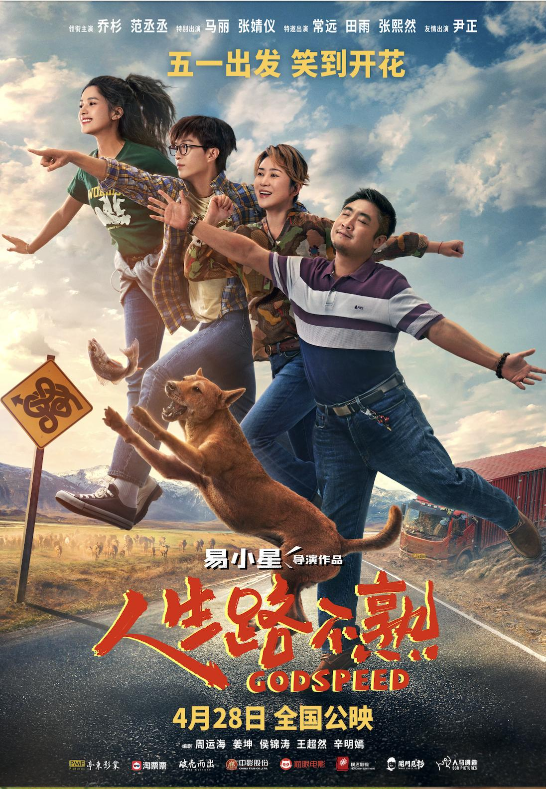

Welcome to Film World!
Search what you like
Film Types
Country
Year

Full River Red
The film chronicles a mystery case set in the beginning era of
Southern Song dynasty. It is set four years after Yue Fei's
death (around 1146). A mysterious murder occurs at Qin Hui's
residence when he meets delegates from the rival Jin Dynasty A
soldier and a commander become entangled in a large conspiracy
as one of the Jin envoys perishes and a confidential letter is
reported missing. Righteous vigilantes are responsible for the
incident and want to kill a suspected traitor.
Score: 7.0

Godspeed
A couple goes on a trip with their daughter and her boyfriend
because of an accident. Although the husband of the couple
doesn't think much of the boyfriend at first, he finally
accepts him after a period of time on the road.
Score: 6.3

One and Only
The film ONE AND ONLY shines a spotlight on the journey of a
nobody in pursuit of his dreams. Chen Shuo, a passionate
teenager, shoulders the burden of his family, but never gives
up on the pursuit of his dream. He runs back and forth between
life and passion, trying to balance between faith and reality,
and writing a hymn to his youth with his own determined will.
The film also tells the audience a story of inter-generational
inheritance: when Ding Lei, a veteran street dancer, meets Chen
Shuo, a young street dancer, Ding Lei's words "keep working hard
and you will succeed" rekindle the youngster's faith; and Chen
Shuo's perseverance and hard work have also restored the initial
aspiration of this disillusioned street dance veteran. The
mentoring friendship and the reborn soul of the group bring
unparalleled strength to the teenager, who leads the members of
the group with his enthusiasm and fearlessness, to compose
together a passionate melody of summer with their youth.
Score: 7.1

Ride On
Lao Luo is a prolific stuntman who works with his Red Hare, his
deformed-at-birth stunt horse who he saved from euthanasia.
His life is falling apart - he had suffered a serious injury
that sent him bankrupt 8 years ago and lost the custody of his
daughter, Xiao Bao, after divorcing his late wife while she was
still young. One night, Lao and Red Hare get into a fight with
debt collectors and they soon learn Red Hare is at risk of being
auctioned after their original company went bankrupt. Lao seeks
legal help from Bao, now a university student studying law, and
despite being reluctant at first, she offers him the services of
her boyfriend, Naihua.
Meanwhile, after Lao's fight with the debt collectors goes viral,
he and Red Hare are hired for several films, with Bao becoming his
agent ad litem. Although they are able to help each other during
tough situations, Bao soon expresses discomfort at Lao's stunt work,
fearing that he and Red Hare might suffer dangerous injuries. After
Lao embarrasses Bao in front of Naihua's parents, she leaves him in
disgust. Afterwards, Lao and Red Hare get seriously injured during a
stunt and as a result, Lao is sent to the hospital. While searching
Lao's home for an ID card, Bao learns that he has saved CCTV footage
of a failed meeting he had with her when she was younger. A touched
Bao reconciles with Lao at the hospital, and Lao promises to stop
doing stunt work.
On one night, Lao wakes up to witness the debt collectors trying
to steal Red Hare; after a brief confrontation, he pays his debt
and invites Dami Ge, the leading debt-collecting thug, to become
one of his disciples. The next day, Yuanjie, Lao's apprentice,
invites him for a role in his film which pays homage to stunt
work - Lao accepts as a final job, to Bao's dismay. Whilst
filming, Lao insists on performing a dangerous stunt himself, but
is unable to finish it after remembering Bao's words and quits
the job. Despite being able to reconcile with Bao once again, Lao
loses Red Hare's case, and is forced to sell them to a company.
Refusing to leave them torn apart, Bao and Naihua convince the
company's CEO, He Xin, to return Red Hare and show him footage of
Lao's previous stunt work to display his dedication to his work.
He Xin returns Red Hare to Lao, explaining that he intended to
return the horse already - Red Hare had attempted to starve
himself while being owned by the company. He Xin leaves as Lao,
Bao, and Naihua reunite with Red Hare.
Score: 5.9

Better Man
Due to an elevator accident, a steely man accidentally enters
a "misplaced" world that has turned him from a success master
into a "full-time househusband". In a world where everyone's
positions have interchanged, Hu Tie Nan is now a househusband.
What was once a gathering with his drinking buddies has now
turned into a beauty competition during afternoon tea. He Tie
Nan really cannot bear how his life has taken a complete
one-eighty. Yet there will come a day when he will eventually
learn to empathise with his wife, to appreciate her silent
dedication and to learn the true meaning of "love".
Score: 4.4